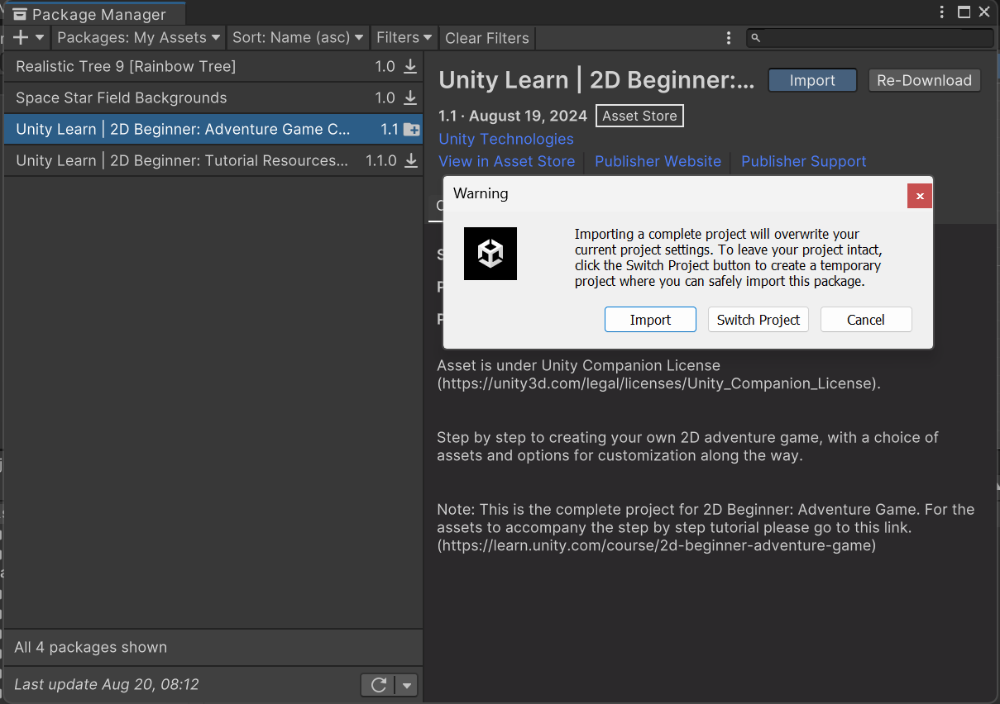
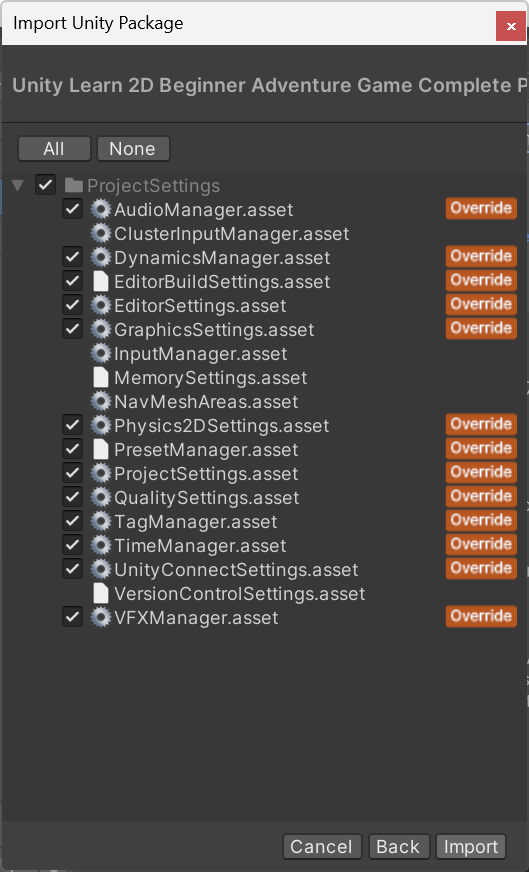
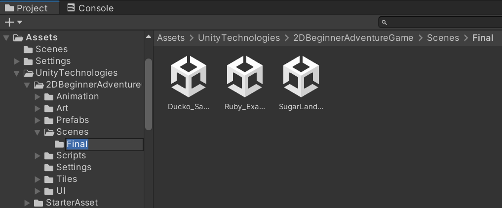

Unity Learn: Ryby's 2D RPG
Aluksi
Tänään ja huomenna tarkoitus on kokeilla Unity Learn-sivuston aloittelijoille tarkoitettua tutoriaalia. Tutoriaali on Unity Technologies tuotantoa ja edustaa siten virallista ohjelmointitapaa.
- Avaa tutoriaali täältä: https://learn.unity.com/course/2d-beginner-adventure-game
- Kirjaudu Unity-tunnuksillasi sivustolle jotta etenemisi tallentuu automaattisesti.
Osatehtävistä
Welcome to 2D Beginner
5. Play the example game
- tässä kohtaa luo uusi 2D projekti
- avaa materiaali Asset Storesta. Sinun pitää valita ensin Import.

Tämän jälkeen uudestaan Import
Kun näet kansion UnityTechnologies on materiaali asennettu. Testaa lopullista peliä ja sen jälkeen jatketaan tutoriaalia eteenpäin.
